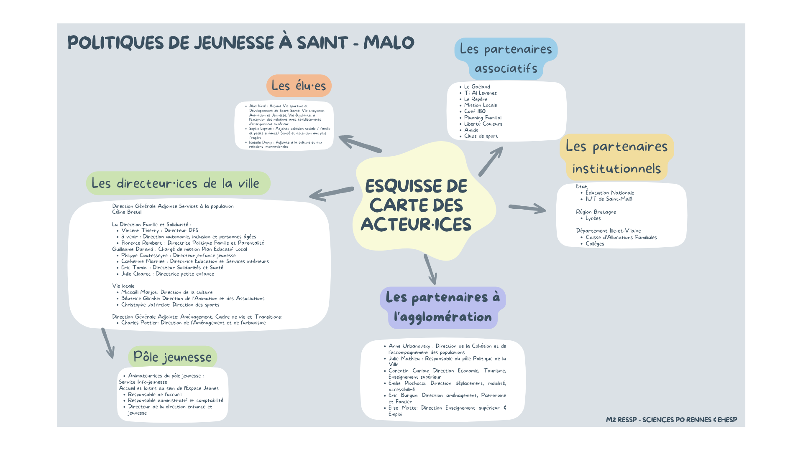

Patricia Loncle, Benoît Giry, Tom Chevallier et Thomas Aguilera
Dans le cadre d'une commande publique de la ville de Saint-Malô, mes camarades de promotion et moi-même avons pu analyser les politiques publiques de jeunesse. Nous avons principalement abordé deux pistes de recherche. Premièrement, nous avons identifié les besoins des jeunes du territoire en allant directement dans les collèges, lycées et autres lieux de sociabilité. Nous avons recueilli leurs perceptions du territoire grâce à des observations, entretiens et questionnaires. Puis, nous avons réalisé des cartes restituant leur vision de l'espace et de l'action publique. Dans un deuxième temps, nous avons mené une analyse qualitative (entretiens et observations) des principales institutions publiques qui interviennent à Saint-Malô (État, collectivités territoriales, associations) afin de proposer aux décideurs une carte des acteurs (ci-dessous) et des pistes d'amélioration concernant les dispositifs mis en place (voir le diaporama ci-dessous).
1/ Cartographie des acteurs

2/ Diaporama de présentation des résultats